Overview
A volunteer management web app that helps nonprofit and company users manage their opportunities and volunteers — bringing together three very different user groups, each with their own needs, on one platform.
Volunteer
The person giving their time to a cause.
Nonprofit
The organization managing opportunities and the volunteers who fill them.
Company
Builds culture and engages employees/customers by enabling their people to volunteer for nonprofit sectors that matter to them.
This case study showcases a feature built for the nonprofit user — but every design decision also considers how it ripples into the volunteer’s experience on the other side.
Designing for multiple user groups at once was challenging, but it exercised a skill I see as essential going forward: finding solutions that work across more than one dimension at a time.
The Nonprofit Management Feature at a Glance
Lets nonprofits seeking volunteers on Meaningful Work do four things:
Manage opportunity postings
Manage volunteer applications
Track progress of accepted volunteers
Write testimonials for outstanding volunteers
Problem Statement
The nonprofit management feature didn't have one specific problem — it had a multitude of undiscovered ones. Before I took it over, only a very basic flow existed, untested for over a year. I knew immediately there was a lot of ground to cover, starting with pushing for real user testing.
Starting out, 2 obvious questions stood out about the feature's flow:
1. Is the progress review loop clear
for both sides?
A "progress" modal let volunteers log hours and completed milestones, then submit them to the nonprofit for review and approval. The open question: how do we make that back-and-forth review process — sending feedback, requesting revisions — clear and effective for both the volunteer and the nonprofit, across real use cases?
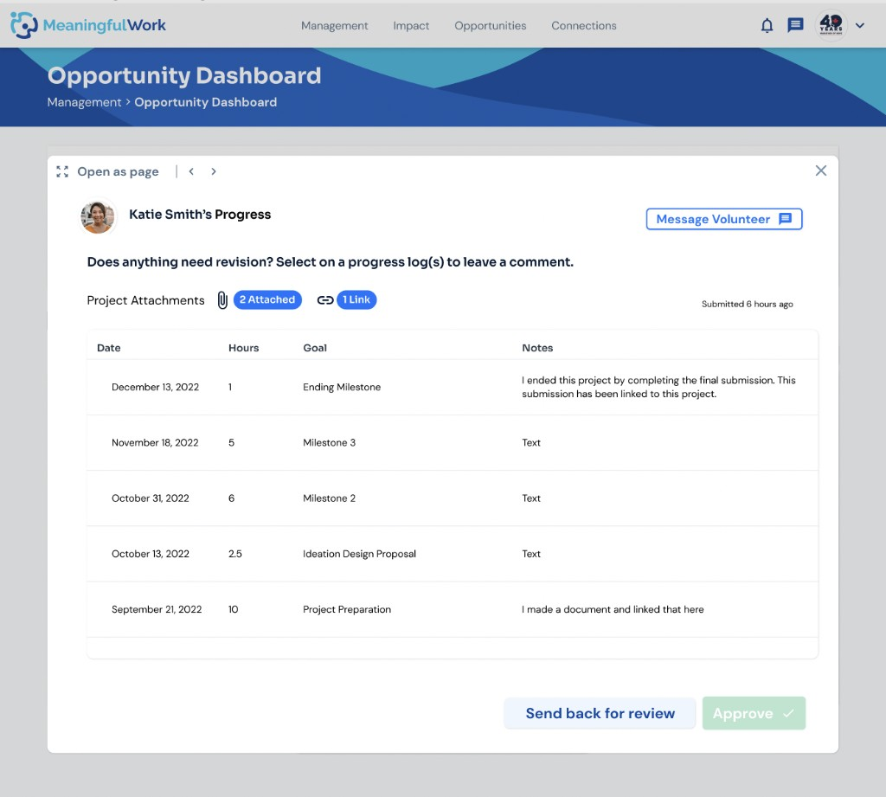
2. Should one slow response hold up
every volunteer?
Originally, an opportunity couldn't begin until every invited volunteer responded — accepted or declined — even if one or more had already accepted. A single unresponsive applicant delayed the start for everyone else, creating irritation and a poor experience on both sides.
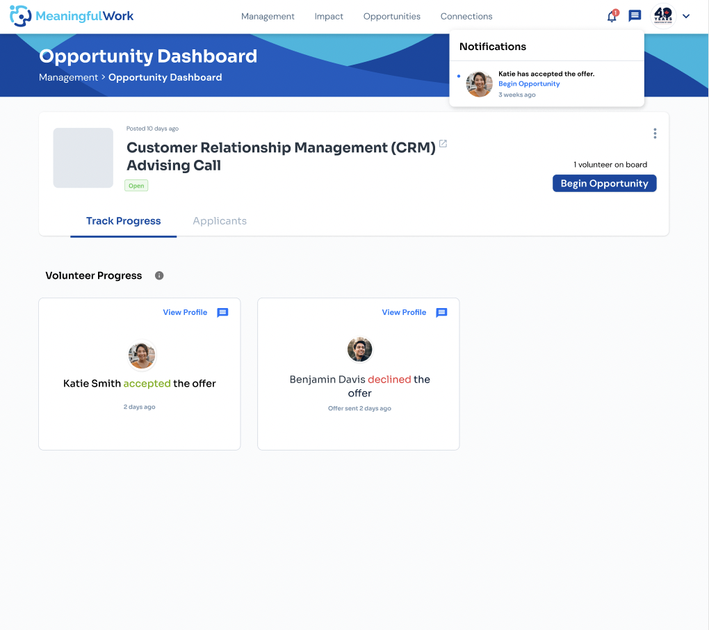
Users and Audience
Of the platform’s 3 user groups — volunteers, nonprofits, and companies — this feature targets the nonprofit user. Every decision still weighs the volunteer’s experience too; company needs are considered least, since no features have been designed for that group yet.
Let’s take a look at the nonprofit user
-
Posts a volunteer opportunity on the platform, hoping to attract interested applicants.
-
Receives applications from volunteers interested in the posting.
-
Reviews applications and sends offers or rejections, as they see fit.
-
Monitors the progress of volunteers throughout the opportunity.
-
Writes a testimonial for the volunteer at the end of the opportunity.
Roles and Responsibilities
When I started this feature, I worked alongside another designer on wireframing, prototyping, and user testing. When they left before the design was finished, I took over the handover to development — reviewing and wireframing missing states, componentizing modals into our design system, checking spacing and layout consistency, annotating specs and user flows, and running dev/design meetings to keep decisions aligned through a successful handover.
Scopes and Constraints
There weren’t any specific constraints for the management feature, other than the fact that it was difficult to find a lot of nonprofit users for user testing. Moving forward, it would be ideal to grow our user base for future user testing.
Process - Part 1
Pre-Design
The gap: opportunity postings don’t redirect volunteers to similar postings when they skip the one they’re on — a missed chance to fix Meaningful Work’s ongoing retention problem. Found by walking the test app as a nonprofit user across multiple passes.
Make the meta tags on a volunteer’s profile page clickable — redirect to opportunities sharing the same tags.
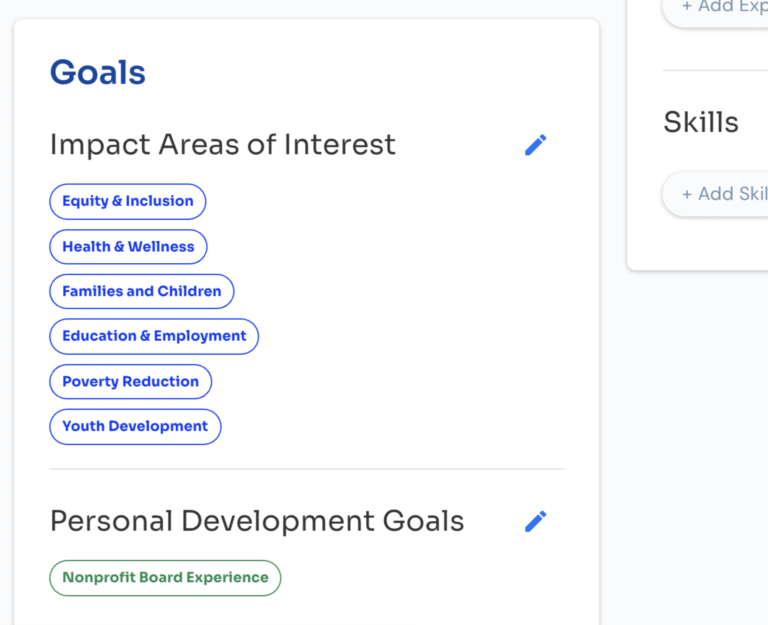
Same behavior on the opportunity page — clicking a skills or impact area tag redirects to similar opportunities.
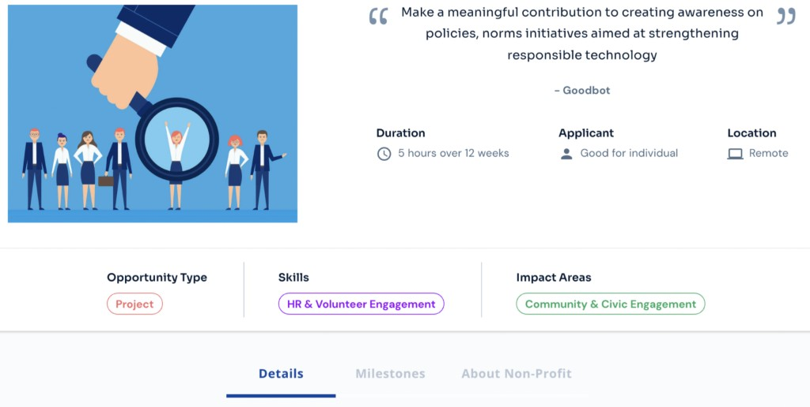
Design Begins
It is important to go over the 4 different parts to the management feature and how they work (prior to my involvement) before we dive into the design process.
Both the management page and opportunity dashboard have their preliminary design done before I started on the feature:
1. Management Page
The Management page is where nonprofits manage all their opportunity postings on Meaningful Work’s platform. They can view all the posting drafts they created, the “open” opportunities – the ones accepting applications from volunteers, and “ongoing” ones – the ones currently in progress, etc.
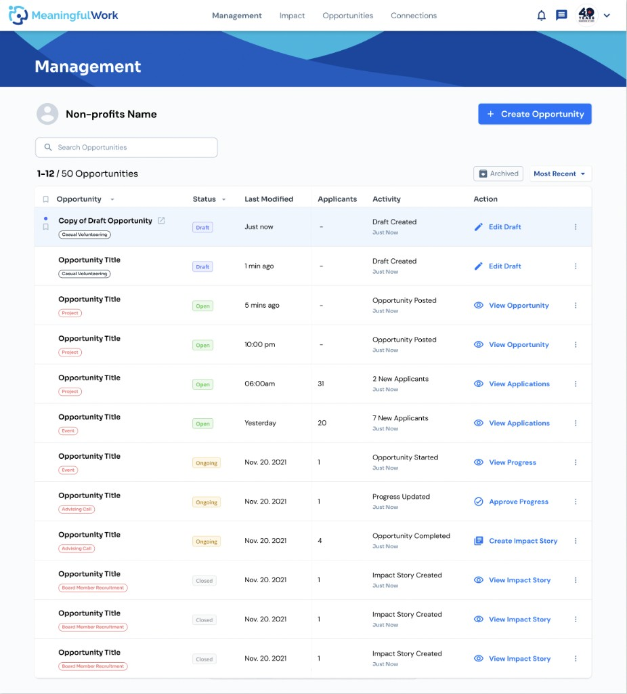
2. Opportunity Dashboard
The Opportunity Dashboard is where the nonprofit user can manage its applicants that applied to its opportunity posting. On the Applicants tab, they can view each applicant’s application and choose to either schedule an interview with them and send them an offer or rejection message. On the Progress tab, the nonprofit user can track the status of the applicants that the nonprofit has extended an offer to. If all volunteers have accepted their offers and responded (even if its “decline” offer), the nonprofit then could begin the opportunity where they could now manage the volunteers’ progress on the Progress tab.
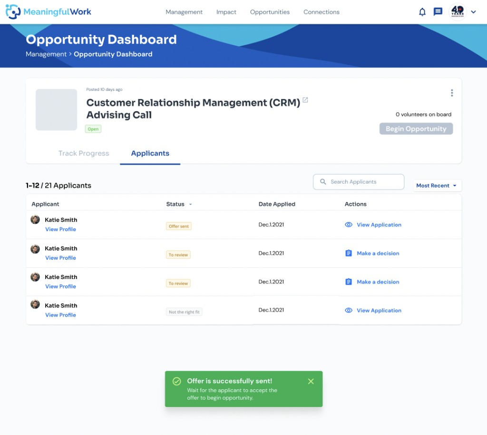
3. Progress Tab
The Progress tab allows the nonprofit to view each volunteer’s progress on the opportunity. The idea here is that every volunteer onboard with the opportunity would log their progress when they completed each milestone/goal in the opportunity. Once all logs are completed, they would submit for the nonprofit to review and approve.
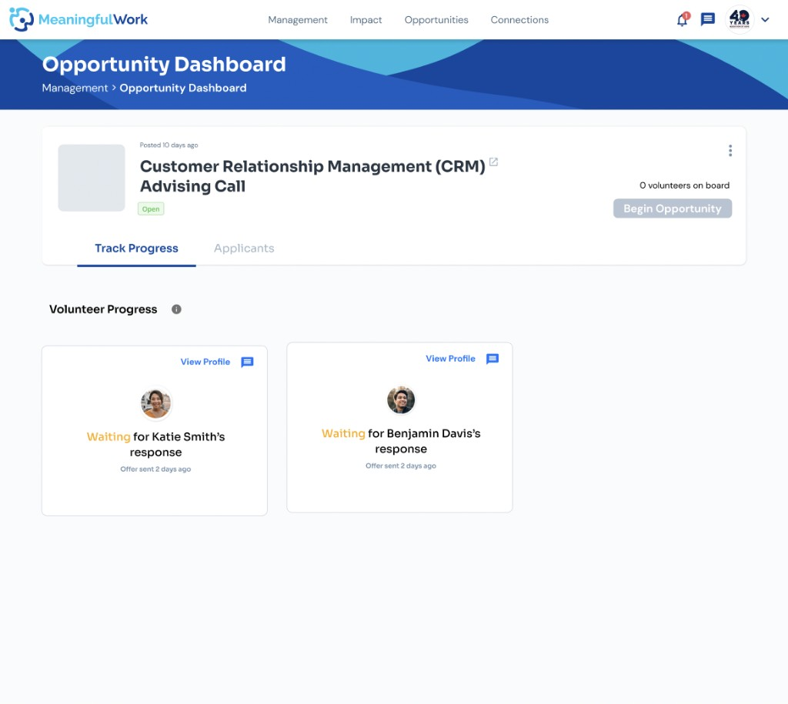
4. Impact Story/Completing Opportunity
Finally, the Impact Story is a “testimonial” written for the volunteer once they have completed the opportunity (after the nonprofit approves of the progress). The writing of the testimonial is optional, hence, if a testimonial is not written, the nonprofit would be asked if they could provide feedback on what could have been done better. Afterwards, the nonprofit would then complete the opportunity so that the opportunity would now be marked as a “closed” opportunity on the Management page.
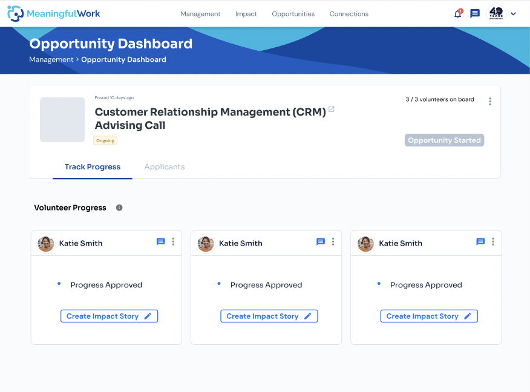
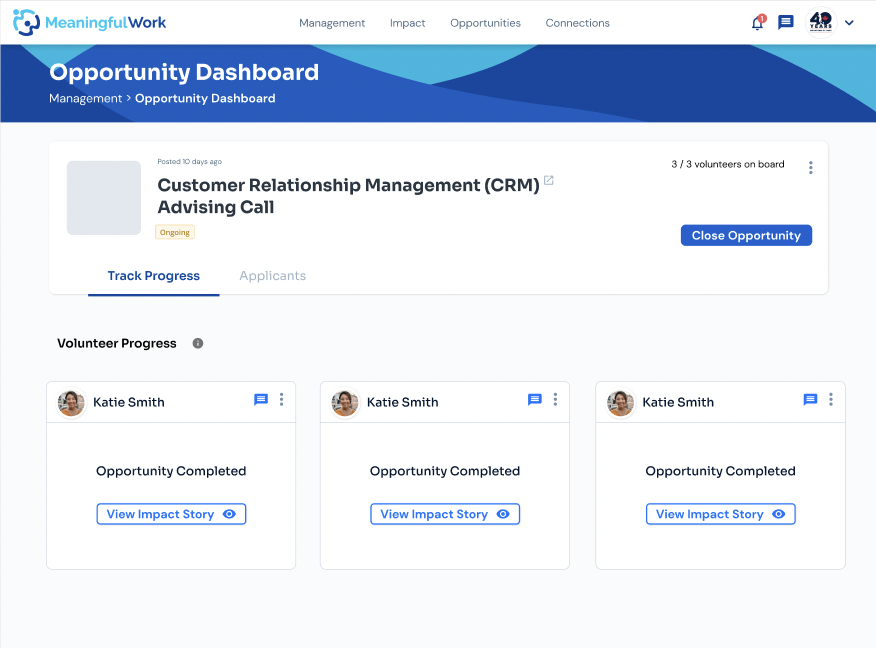
Deep Dive into the Progress Modal
After having walked through the test app myself, I discussed with the management team in terms of what needs to be designed.
Since the Management page and Opportunity Dashboard are well established, I took on the Progress tab.
This is how the Progress modal looked in the beginning:
The nonprofit user views the hours and milestones a volunteer logged for an opportunity, as a list of progress logs — each showing the milestone and hours dedicated to it.
Leaves general feedback on everything logged so far, so the volunteer can make revisions.
Used when everything looks good — completes the opportunity on the volunteer's behalf.
The progress modal has to work for 2 user groups at once — the volunteer logging progress, and the nonprofit reviewing and approving it — so the back-and-forth needed to stay clear and enjoyable for both. Here's the first ideated solution, wireframed for the team to review.
Screen 1 — Progress List
-
A checkbox on each log lets the nonprofit comment on individual entries — feedback gets more specific and clear.
-
A status column shows whether a log is reviewed, revised, or completed.
-
Clicking a log opens its full milestone details.
-
Once every log is marked complete, the nonprofit approves the modal — closing out the opportunity.
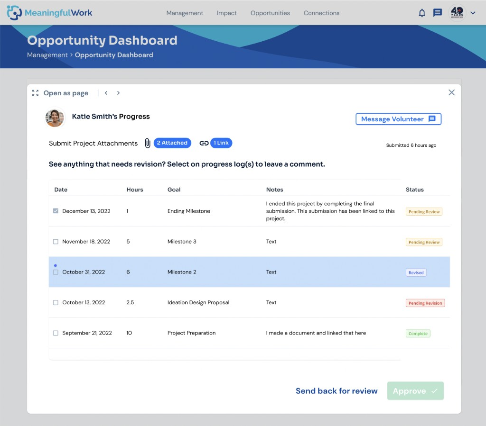
Screen 2 — Log Detail & Revisions
-
Where the nonprofit lands after clicking into a progress log from screen 1.
-
Shows both the nonprofit's feedback and the volunteer's comments on their revisions, side by side.
-
The nonprofit can send another comment, or mark this specific log "complete."
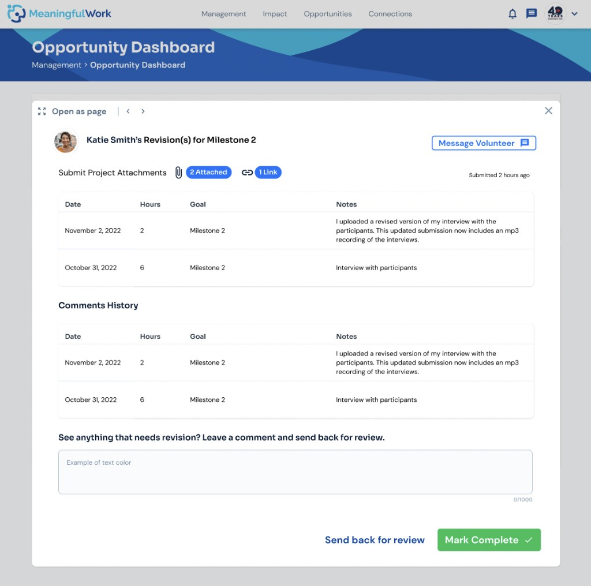
Management's pushback: the design was too complex. Their assumption was that reviewing and commenting on every individual log would overwhelm the nonprofit user — so their proposal was to review everything at once, after all milestones are submitted, leave one comment, and approve if it looks fine.
The progress modal going for user testing instead:
I disagreed with that rationale, and still do. Letting the nonprofit comment as progress is logged catches errors earlier and keeps both users more engaged — I also pushed for a revision comments history so both sides could reference past feedback later. Since we didn't align, I pushed for user testing to validate the simplified version instead.
1st User Testing for the Management Feature since a Year Without any Testings
Since there weren't any user testings conducted on the management feature since a year ago, this would be considered the first user research/testing in a long time. It would be the opportunity to validate a lot of design decisions, not solely for the progress modal that I pushed for, but the overall management feature in general.
This is the opportunity to understand our nonprofit users better and make design decisions beyond us designers or the management team.
Process - Part 2
Designing Chat Modals
After the Progress modal, management wanted chat modals for rejecting volunteers — letting the nonprofit send a personalized, kind message both when rejecting someone individually and when mass-rejecting everyone not accepted for an opportunity.
Sending a personalized message to every rejected applicant might seem excessive — the nonprofit has to reject and message everyone before starting the opportunity with accepted applicants — but the stakeholder's intent was clear: keep volunteers encouraged to apply again, not discouraged. Another reminder that this feature has to balance nonprofit, volunteer, and stakeholder needs all at once.
Rejection Chat Modal (Individual)
1st wireframe — designed by a co-designer, with my feedback
Rejection Chat Modal (Mass Reject)
Schedule Interview Chat (preliminary design)
Other than the chat modals, there’s also a modal for scheduling a meeting/interview with the applicants. Here, we see a preliminary design for scheduling interview (designed by another designer – gave feedback on design) which I would further design later in the process:
Preparing the User Testing Doc (asking general questions and questions about the progress tab)
In preparation for user testing, I helped build a testing doc covering all 4 parts of the management feature. For post-test questions, if participants struggled with the progress tab, I'd dig deeper into why — since that tab is what sparked the need for testing in the first place.
In retrospect, our questions should have been more open-ended, letting users explore the flow themselves rather than guiding them (e.g. "how would you delete a draft from this view?"). We aimed to test specific features, but self-exploration would have been more realistic and valuable.
Some questions from the user testing doc:
How would you delete a draft opportunity from this view?
Walk me through reviewing a volunteer’s logged progress.
How would you message everyone you’re not accepting?
How would you know an opportunity is ready to begin?
When a Volunteer Rejects OR Doesn't Respond to a Nonprofit's Offer – What Happens?
Another use case that we’ve identified as a team is that volunteers who have been extended an offer by the nonprofit to an opportunity may reject or won’t respond to an offer. This could be due to life plans and commitments that don’t allow the volunteer to volunteer anymore for the opportunity that they applied to.
In this case, the original design was to have a 7 day time limit for the volunteer to respond to their offer.
Volunteers extended an offer sometimes reject or never respond — often due to life plans or commitments changing. The original design gave volunteers a 7-day window to respond.
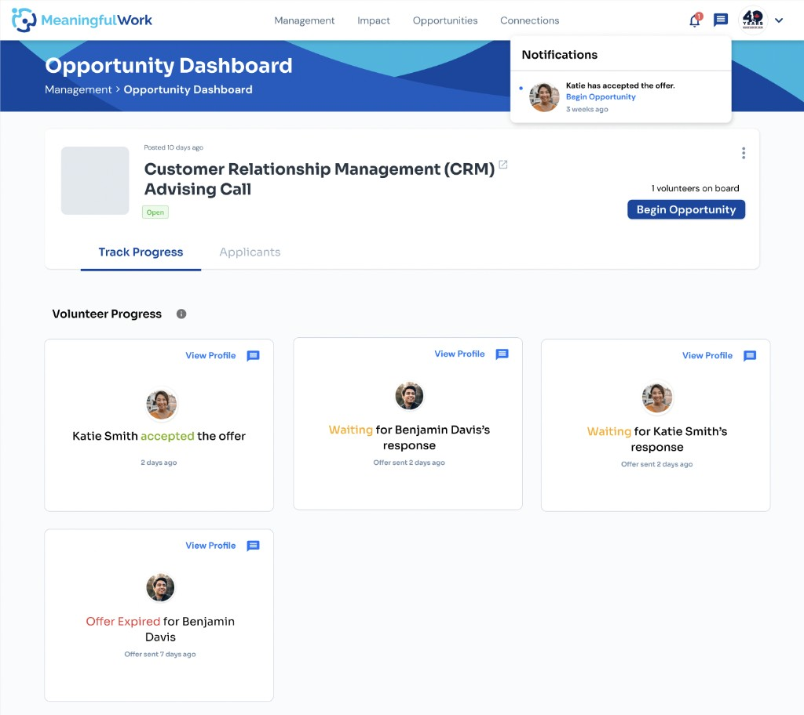
The 7-day window prevents the nonprofit and already-accepted volunteers from starting the opportunity. With multiple volunteers offered at different times, this compounds: if Volunteer A accepts immediately but B (3 days in, 4 left) and C (just offered, 7 left) both use their full window, A ends up waiting 7 extra days anyway — frustrating for everyone.
It also creates a business risk: knowing offers can sit for 7 days, nonprofits would likely extend fewer offers at once to avoid a backlog. That works against their actual interest in onboarding more volunteers — too high an opportunity cost for a flexibility roadblock.
I've brought this concern to the team and presented a new user flow that I created that would address this problem:
The problem, worked through
If B and C both take the full window, A — who said yes right away — still waits 7 more days to start.
Knock-on business risk: knowing offers can sit for 7 days, nonprofits would likely extend fewer offers at once to avoid a backlog — directly working against their interest in onboarding more volunteers.
The fix I proposed
First-come, first-served onboarding — no timestamp at all. Whoever responds first gets onboarded; once capacity is filled, everyone else is automatically rejected.
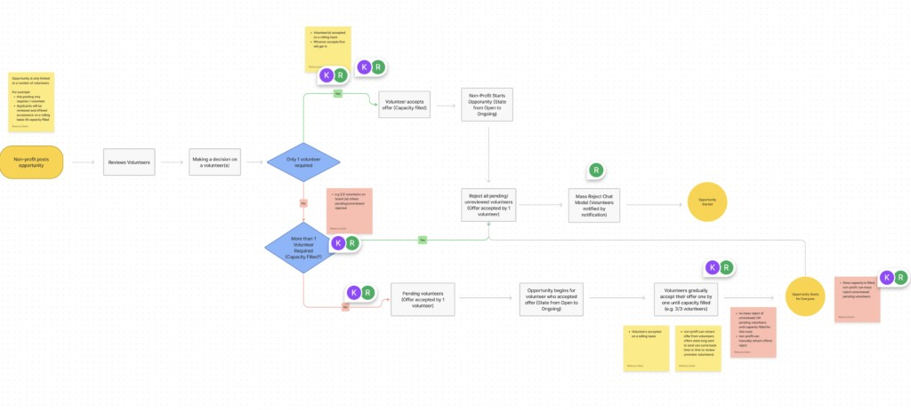
The Impact Story User Flow and Design
Another part that's part of the feature is the Impact Story. An Impact Story is essentially a testimonial written by the nonprofit to the volunteer to appreciate the hard work that they've put in for the volunteer project/event.
This is a simple impact story flow that I designed before the testing:
The idea behind the impact story flow was that the user would be prompted to create an impact story once the volunteer’s progress has been approved. Iterations would be made to the impact story flow later on as it would prove to be not clear enough.
Prototyped the Management Flow
After the design changes have been made to the progress tab, chat modals, and having determined the flow to when a volunteer rejects/doesn’t respond to an offer – the feature is ready for prototyping.
At the same time that I was working on the prototyping of the management feature, I continuously gave feedback on how the progress tab would look like on the volunteer’s side to make sure that the features and designs are consistent.
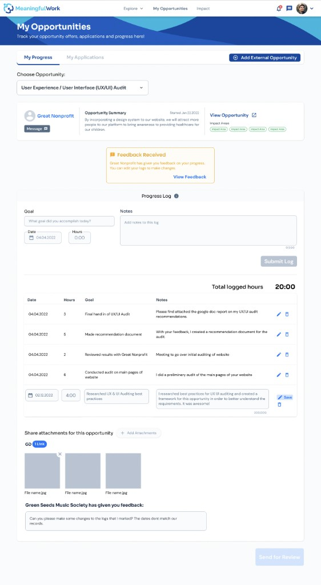
Multiple User Testings – 4 Iterations
1st Round – Internal: (7 participants)
Opportunity dashboard / chat modals
Mass rejection chat modal
Unclear recipient; wants auto-generated template; needs clearer “rejecting” indicator.
Individual rejection chat modal
Skipped the message field — prefers it automatic.
View volunteer profile
Expected a name click to go straight to the profile.
Applicant review flow
Rejected-applicant interaction felt jarring; most just want to move fast.
Progress tab / impact story / closing
Impact story creation
Needs instructions/tooltips, both sides of the experience.
Closing an opportunity
Should auto-close once the last impact story is completed.
Progress tab
State changes unclear; wants per-milestone submit-and-approve.
2nd Round – External: (3 participants)
Opportunity dashboard / chat modals
Applicant review flow recurring
Chatting with rejected volunteers before accepted ones felt out of order.
Chat modal recipient clarity recurring
Assumed messages were going to accepted volunteers.
Opportunity dashboard — progress cards
Only shows accepted volunteers — confusing with declined applicants mixed in.
Progress tab / impact story / closing
Impact story
Positive — shows the volunteer’s success; compared to LinkedIn skill endorsements.
Progress tab recurring
Unclear when the modal counts as “completed” — too many states.
User Profile and Nonprofit Creating Opportunity QA Meeting
During the design of the feature, there were opportunities for both the design and developer team to come together to do a QA of both the volunteer’s user profile and understanding how a nonprofit user would go about creating an opportunity on the platform.
It was a great opportunity to see if the current experience for both the volunteer and nonprofit makes sense when we use the application ourselves (potential feedback to be incorporated into the new version of the design), and to detect any bugs within the process.
Process - Part 3
Presented User Findings (User Feedback from User Testing 1 and 2) to Management Team
Based on the feedback from the first 2 user testings above, iterations needed to be made on the chat modals to make sending a message more efficient and personalized. As for the impact story, one participant mentioned that there were no clear instructions on how to create an impact story (“how do I create an impact story, where does the impact story get sent to, where can I find the impact story afterwards”). Since only one participant reported the concern during the first user testing, I wanted to see if there were more responses in the next 2 user testings before I make any iterations.
The Progress Stepper
Based on the 2nd user testing’s feedback (external user) for confusion around not sure when the opportunity ends, hence, there is a need to make clear of the stages of going through the progress for the nonprofit user.
The intention of the progress stepper is to indicate at which stage of the progress the nonprofit user is on, the action they have to take next, with a hover-over tooltip to guide them along the way.
I also asked the CTO if this is implementable technically speaking.
(Below is the flow of the progress stepper – initial design):
2 More Internal Users' Findings
Opportunity dashboard / chat modals
Progress stepper clarity
Unclear what a greyed-out state means — needs a clearer color change.
Rejection messaging preference
Should be up to the nonprofit whether to message rejected volunteers; one participant only wants to see who they’re working with.
Progress tab / impact story / closing
Impact story — awareness & preview recurring
Neither participant was sure they’d created the story — sharing happened suddenly, with no confirmation or preview beforehand.
- Confirm creation, show where to find it, before sharing.
- Preview for first-time nonprofit users.
Iterations on the Progress Stepper
I asked the participant whether or not a change in the progress stepper colour would make it more clear to know what it means – and the participant said yes.
Here is the iteration to the progress stepper below (before and after):

Iterations on the Impact Story User Flow and Design
After the 2nd Internal User Testing – The Impact Story Preview:
During the 2nd internal user testing, there were 2 participants who suggested that they are still confused with how to create an impact story/testimonial for a volunteer, and that it would be nice to have a preview – hence, a preview is added to the modal so that the user can see in real time how an impact story is being created.
I incorporated the impact story and closing (because closing is also not intuitive as well), and after brainstorming as a team – we decided to close the opportunity automatically once an impact story has been created for every volunteer.
It is important to note that creating an impact story is optional – if a nonprofit decides not to write a testimonial they can leave the testimonial blank and a default impact story would be created (just the impact hours volunteered and the impact value).
Below shows an impact story flow with testimonial:

Impact story without testimonial:
4th Round – Internal: (2 participants)
Confirmed working
Progress stepper
Orange reads as “in progress,” green as complete.
Impact story preview
Both participants understood what it is, who it’s for, and where it appears.
New issue
Progress visible pre-submission
Felt odd to see progress before it’s submitted — one participant wanted to comment immediately, and questioned the point of “submitting” at all.
Changing the stepper to orange, and adding the impact story preview, both resolved the confusion they were meant to fix.
Iteration on Progress Tab
According to similar feedback in the 1st and 2nd user testing session – the idea of unsure when progress ends and the experience being tedious since there is a lot of back and forth (to check, give feedback on progress, and volunteer resubmits for review before approving), the 4th and last user testing session ensured the need to actually make the progress tracking flow more clear.
The removal of the state revision submitted suggests that the volunteer can submit their progress whenever (not submitted in the end) and the nonprofit can give feedback whenever. This aligns with my original idea (in the very beginning before all the user testings – that the nonprofit would prefer to be able to give feedback on each progress as the volunteer logs rather than give a generic comment in the end).
Below is the comparison in the change in the progress flow:
Although the purpose of the user testing is to not necessarily prove that the designer is right, it is however to note that had the designer not pushed for the change and to validate the idea through user testing, then a confusing experience might be shipped out.
Missing Features Being Added
Attachments Flow (missing previously) – Componentized into Design System
Created Missing Instances of Notifications into the management Feature (put into the Design System)
Notifications
Five moments that trigger a notification to the nonprofit.
New application
Notifies the nonprofit when a volunteer applies — prompts them to view the application.
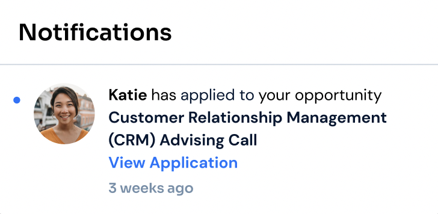
Offer accepted
Notifies the nonprofit that the volunteer accepted — prompts them to begin the opportunity.
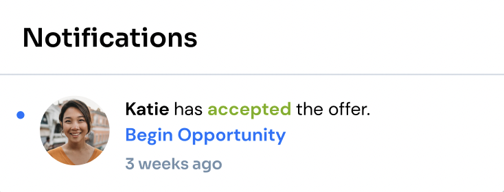
New follower
Notifies the nonprofit that a volunteer started following them — the volunteer gets notified of future postings.
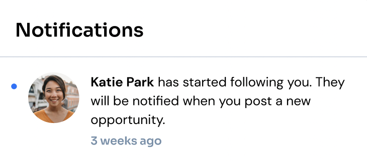
Progress logged
Notifies the nonprofit that the volunteer logged progress — prompts them to view it.
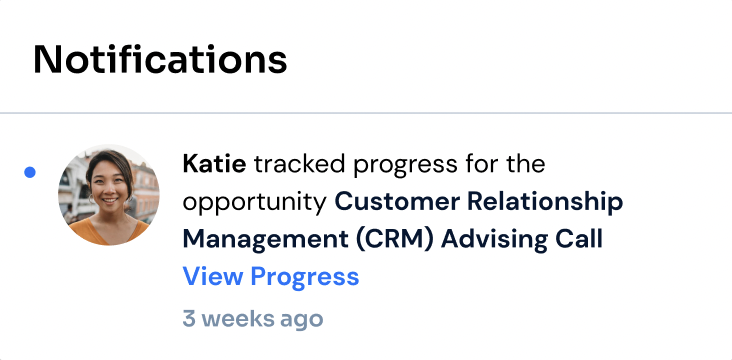
Impact story reminder
Reminds the nonprofit to create an impact story after approving progress, to complete the opportunity.
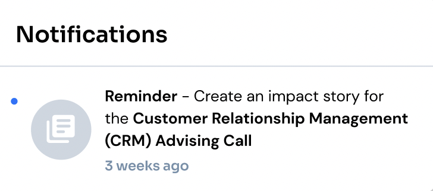
Modals, Cards, and Missing States – Componentized into Design System
Once all the core designs are done, I started componentizing the modals and cards within the design flow – below are the modals and cards that I componentized into the design system for ease of moving the flow into the handover file for the development team later on.
Accepted
The volunteer accepted the nonprofit's offer.
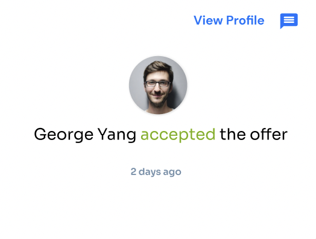
Waiting
Offer extended, and the nonprofit is waiting on the volunteer to accept or decline.
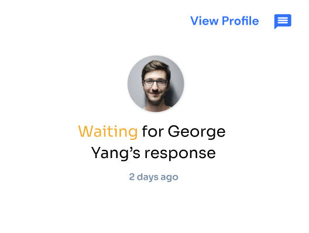
Declined
The volunteer declined the offer.
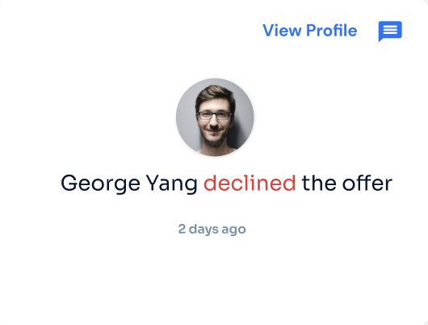
I componentized the dashboard’s header so that the state of the opportunity, button, and image/text can be interchanged conveniently to show the different instances.
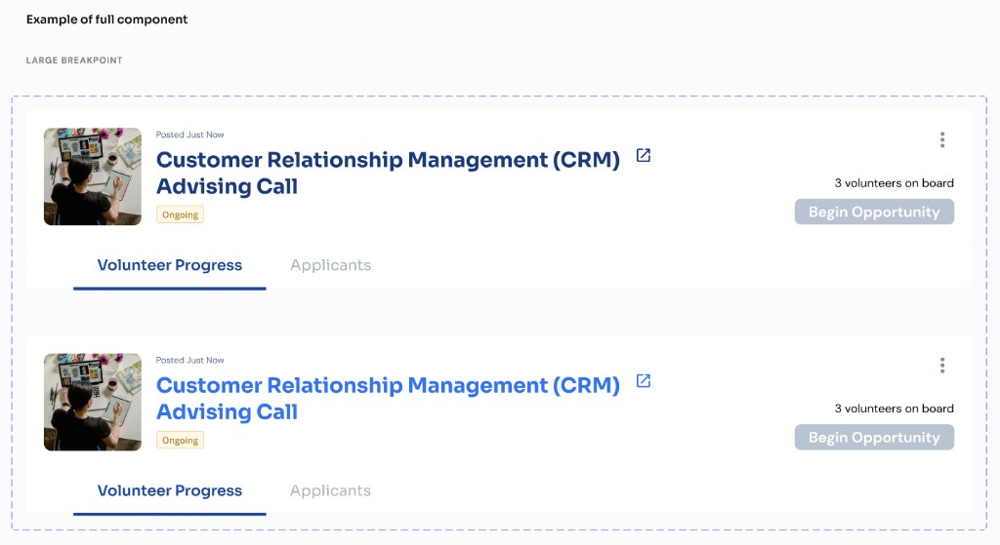
Some missing states were also added:
Applicants table — declined state
Componentized the missing “declined” state in the applicants table to show when a volunteer declines an offer. Also added a notification letting the nonprofit know.
Management page — closed vs. completed
Previously, opportunities only had a “closed” state. Componentized a new “completed” state so the two are clearly distinguished:
Closed
No applications received, or the nonprofit closed the posting manually without beginning it.
Completed
The opportunity began, progress was approved, and impact stories were created for every volunteer — it then auto-completes.
Management page — beginning an opportunity
The nonprofit can now begin an opportunity directly from the management page, alongside the opportunity dashboard — starting whenever they judge that enough volunteers have accepted, even with no new applicants pending.
Since data tables are prevalent throughout the design flow, it is essential to ensure that paginations are added for every screen that has a table – with the number of pages matching the table header for the correct number of pages that makes sense.
Hyperlink on Volunteer's Name to View Profile
Another design fix that I had done was making the volunteer’s name to be a clickable hyperlink so that the nonprofit user could view the volunteer’s profile easily. Previously, the nonprofit user would have to click on the hyperlink text “View Profile” to view the volunteer’s profile. According to the feedback from the 1st user testing session, that wasn’t intuitive and seemed redundant when the name could be a direct entry point to the profile itself.
Vetting all the Screens in the Management Feature
After making sure that everything design wise is included in the flow, I started the process of checking all the screens in the feature:
I checked the spacing to make sure that all the frames are consistent in their spacing and labeled everything accordingly (all the layers) to make sure they’re clear for other designers in the future and for developers who will be working on the designs pretty soon.
Final Thoughts
This feature is now complete and in handover with a developer.
I would say the challenge for this project is to take into consideration the different user groups involved – the nonprofit and volunteer users, and the stakeholders (management team). It's especially challenging to design new features on top of an existing design (especially a design that has not been tested for in a year's time). Designing for this feature had me carry a lot of doubts about designing on top of a design that might be highly flawed since it's not been validated through user testing.
How I understand design to be is to follow the design process of conducting UX research and speaking with our users first. If a designer jumps head first into design without having the opportunity to understand the scope of the problem, the actual problem(s) they're solving for, who their users are, and what they're building for that user group – then it requires a high cost later on in both time and effort to backtrack and improve on the design then.
Therefore, in my next design, I pushed the management team to allow me to speak with the company users first and actually take the time to brainstorm and ideate before jumping straight into design.
You can now find this new project named "Web-App: Team Volunteering Feature for Company Users" under the UX Portfolio Tab (currently in progress).